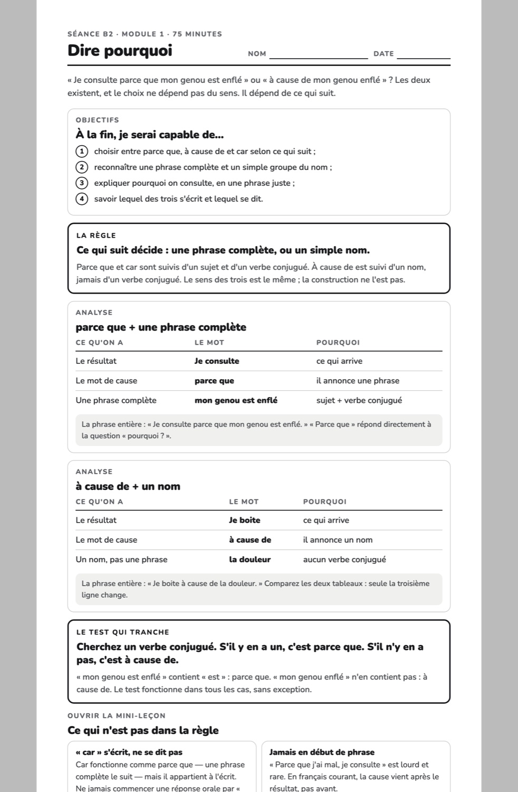
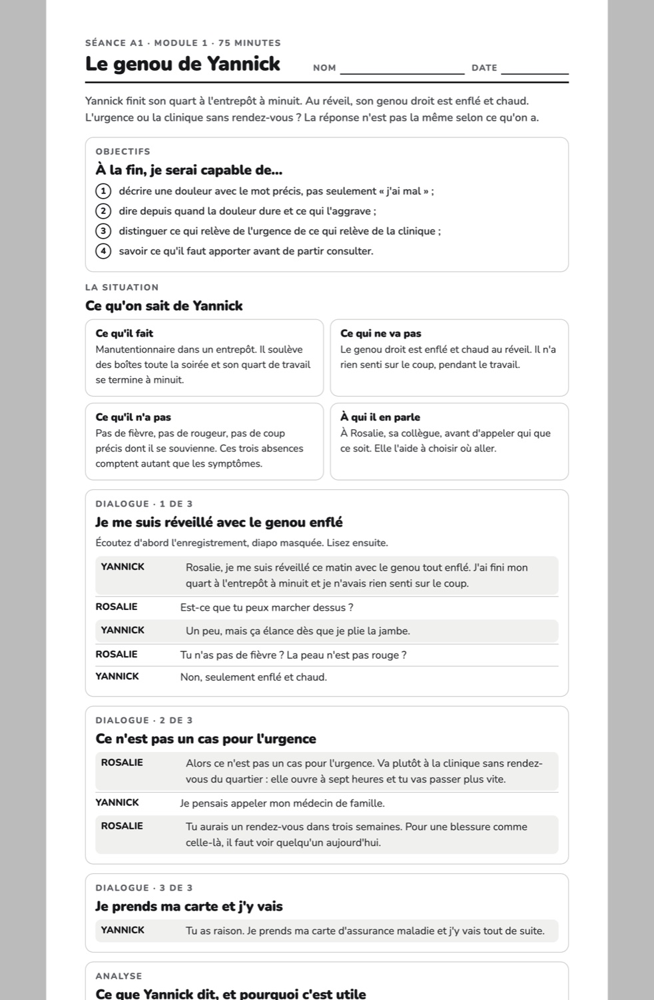
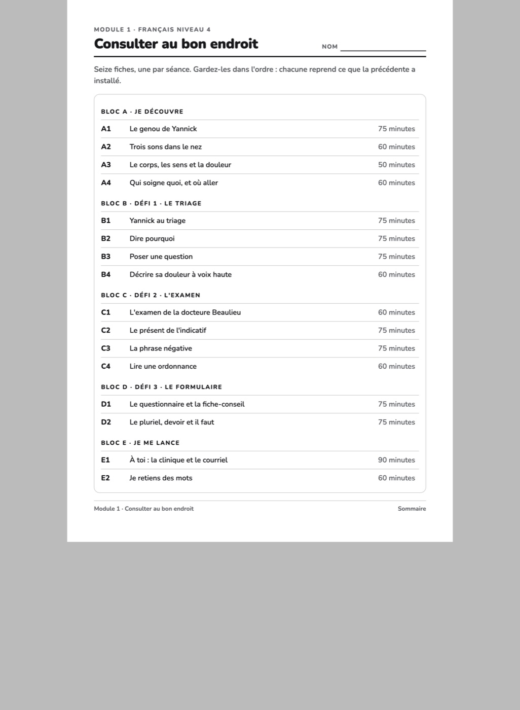
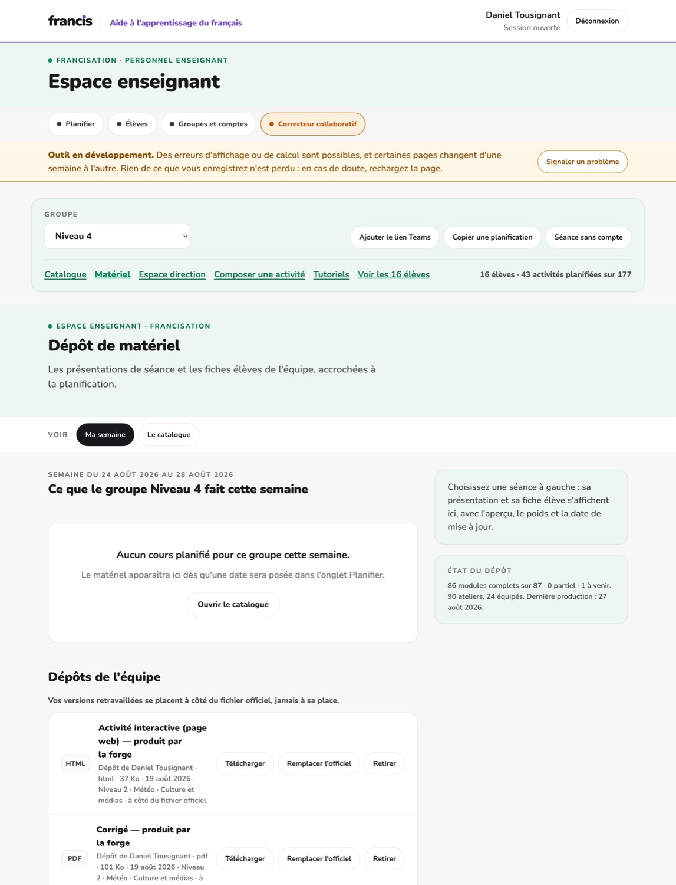
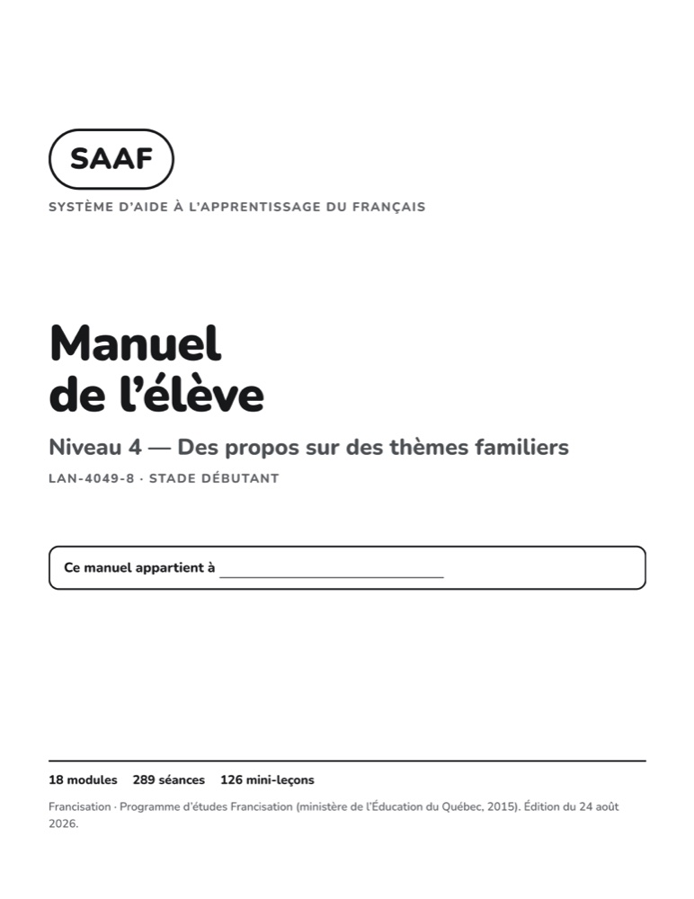

Une fiche de grammaire
Séance B2 du module 1 — « Dire pourquoi ».

Direction et enseignants · Le matériel
Ce que l'élève reçoit sur papier, et ce que l'enseignant a en main sans rien préparer : 1 264 fiches de séance couvrant 86 modules, une page par séance, en noir et blanc, plus les sommaires et le manuel relié. Toutes sortent du même fichier que le diaporama projeté en classe : elles ne peuvent pas diverger.
Compté sur le dépôt le 30 août 2026. Les captures sont prises sur les fichiers réels.
Chaque séance de chaque module a sa fiche : une page, format lettre, en noir et blanc, prête pour la photocopieuse de l'école. Aucune couleur nulle part — toute la hiérarchie passe par la graisse, les filets et les mots. C'est la règle du système poussée à son terme : jamais d'information portée par la couleur seule, parce qu'une photocopie de photocopie ne garde que le noir.
Ce que c'est
Un module de cours, c'est seize séances réparties en cinq blocs — A on découvre, B, C et D les trois défis, E on se lance. Les modules courts des niveaux 1 et 2 en comptent huit. La fiche reprend, pour l'élève, ce que la classe a fait : la règle, les exemples, les tableaux d'analyse, les exercices à faire de sa main.
| Niveau | Fiches de l'élève | Diaporamas de séance |
|---|---|---|
| Niveau 1 | 32 | 32 |
| Niveau 2 | 80 | 80 |
| Niveau 3 | 208 | 208 |
| Niveau 4 | 288 | 288 |
| Niveau 5 | 224 | 224 |
| Niveau 6 | 160 | 160 |
| Niveau 7 | 176 | 176 |
| Niveau 8 | 96 | 96 |
| Total | 1264 | 1264 |
La règle qui tient tout
Le fichier de séance est lu deux fois. Lu par le moteur des présentations, il donne le diaporama que l'enseignant projette. Lu par le moteur des fiches, il donne la page que l'élève reçoit. Elles ne peuvent pas diverger : corriger une règle dans la séance corrige les deux, et il n'existe pas de version « à jour » et de version « oubliée ».
Ce que la fiche fait autrement : les notes d'enseignant disparaissent — elles pilotent la classe, elles n'ont rien à faire entre les mains de l'élève — et les réponses des exercices projetés cèdent la place à des lignes à remplir.
À quoi ça ressemble
Séance B2 du module 1 — « Dire pourquoi ».

Séance A1 — le dialogue d'ouverture.

Une page par module, remise en tête du paquet.

Ce que l'enseignant a en main
Quatrième onglet de l'espace enseignant. Il ne demande rien à personne : le matériel est déjà là, accroché à la planification du groupe.
Ce que le groupe fait cette semaine, séance par séance.

Tout le matériel, filtrable.

L'impression sort en une fois. Une série de fiches s'imprime dans un seul dialogue, chaque fiche sur sa page — et l'impression passe par un cadre isolé, jamais par la page du portail : rien de l'interface ne peut se glisser dans la photocopie.
Pour ceux qui préfèrent le papier relié
Les fiches d'un niveau entier reliées en un seul PDF, avec couverture, mode d'emploi, table des matières paginée, intercalaire par module, folios et signets par séance. Deux mises en page, contenu identique : pleine page (1 753 p., la fiche telle qu'elle est photocopiée) et serré (852 p., un format de consultation).
Le niveau 4 en un seul PDF.

La couverture est complète. 1 264 fiches pour 1 264 diaporamas : chaque séance projetée a sa fiche imprimable, et l'inverse. 72 modules ont seize séances, 14 en ont huit — ce sont les modules courts des premiers niveaux.